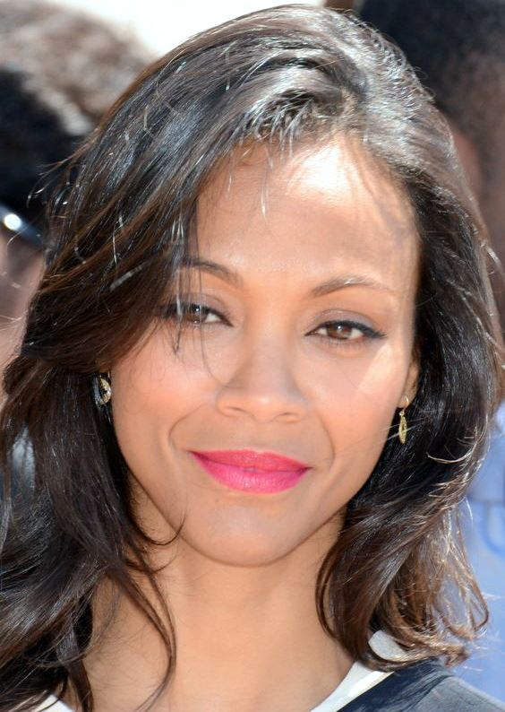
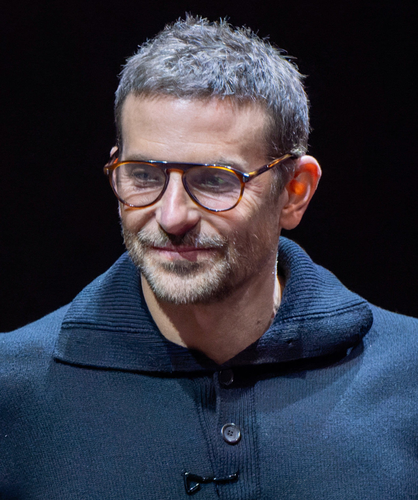

El elenco de Guardianes de la Galaxia reúne a un grupo de actores
provenientes de géneros muy distintos, lo que le dio a la película
una energía y química únicas en pantalla.

Chris Pratt
Peter Quill / Star-Lord
Conocido por su rol cómico en Parks and Recreation, Pratt
transformó su físico completamente para dar vida a Star-Lord.
Su carisma y timing cómico fueron clave para el éxito de la película.
El personaje es un terrícola criado en el espacio que lidera al grupo
con improvisación y mucha suerte.

Zoe Saldana
Gamora
Veterana de las grandes producciones de ciencia ficción (Avatar,
Star Trek), Saldana interpreta a Gamora, hija adoptiva de Thanos
y la mujer más peligrosa de la galaxia. Su arco de redención es uno de los
más emotivos de la historia.

Dave Bautista
Drax el Destructor
Ex luchador de la WWE, Bautista sorprendió a críticos y audiencias con
una actuación llena de matices. Drax es un guerrero que tomó todo de
forma literal, lo que genera una de las fuentes de humor más originales
del film. Su motivación personal de vengar a su familia lo hace entrañable.

Vin Diesel
Groot
Con tan solo tres palabras —"Soy Groot"— Vin Diesel logró crear uno de
los personajes más queridos del UCM. Groot es un árbol humanoide de enorme
corazón, capaz de comunicar todo tipo de emociones con esa única frase.
Diesel grabó el diálogo en más de 15 idiomas para las versiones localizadas.

Bradley Cooper
Rocket Raccoon
Cooper prestó su voz al sarcástico e ingenioso Rocket, un mapache
modificado genéticamente que es el mejor tirador del grupo. Pese
a su aparente frialdad, Rocket esconde un profundo dolor por los
experimentos que lo crearon. Cooper se negó a ver al personaje como
un animal; lo trató como a una persona.